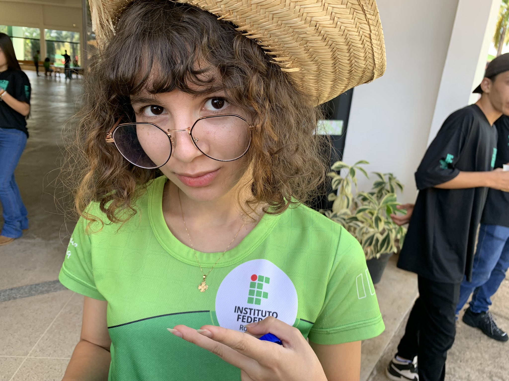

Galeria de Fotos

Data: 16/04/2023 Local: IFRO Campus Colorado do Oeste
Objetivo da Visita: O objetivo desta visita técnica foi conhecer as instalações e os recursos disponíveis no IFRO Campus Colorado do Oeste, bem como entender as práticas educacionais e tecnológicas adotadas pela instituição.
Atividades Realizadas: Durante a visita, foram realizadas as seguintes atividades:
1. Recepção e Apresentação Inicial: Os participantes foram recebidos pela equipe do IFRO, que apresentou uma visão geral da instituição, suas áreas de atuação e principais projetos em andamento.
2. Almoço no Refeitório do Campus: Antes das apresentações, os participantes tiveram a oportunidade de desfrutar de um almoço no refeitório do campus. Foi destacado que boa parte dos alimentos utilizados no preparo das refeições é produzida no campo, incluindo verduras, legumes, ovos e carne.
3. Apresentação de Tecnologias Desenvolvidas pelo Campus: A terceira atividade consistiu na apresentação das tecnologias desenvolvidas pelo campus, incluindo o "IFRO Mobile", uma plataforma que facilita o acesso a informações acadêmicas, e a técnica de "Silagem", um método inovador para conservação de alimentos para animais. Além disso, foi detalhado o projeto "Câmera Escura", que inicialmente teve como objetivo melhorar as aulas virtuais por meio de técnicas de iluminação e qualidade de imagem.
4. Tour pelas Instalações de Cuidado com Animais e Cultivo: Em seguida, foi realizado um tour pelas instalações de cuidado com os animais, onde os participantes puderam conhecer os animais criados no campus, incluindo vacas, cavalos, galinhas, porcos e coelhos. Também foram visitadas as áreas de cultivo, incluindo a hidroponia, onde é feita a produção de alface.
Conclusão: A visita técnica ao IFRO Campus Colorado do Oeste proporcionou uma compreensão profunda das atividades educacionais e tecnológicas desenvolvidas pela instituição. Ficou evidente o compromisso do IFRO em oferecer um ambiente de aprendizado enriquecedor e prático, integrando teoria e prática de maneira eficaz.
Observações Finais: Agradecemos ao IFRO e sua equipe pela receptividade durante a visita. As informações e experiências compartilhadas contribuirão para a ampliação do nosso conhecimento sobre as práticas educacionais, o uso de tecnologias no ambiente acadêmico, as inovações desenvolvidas pelo campus e as atividades relacionadas ao cultivo e cuidado com os animais.
Everton Gustavo da Silva